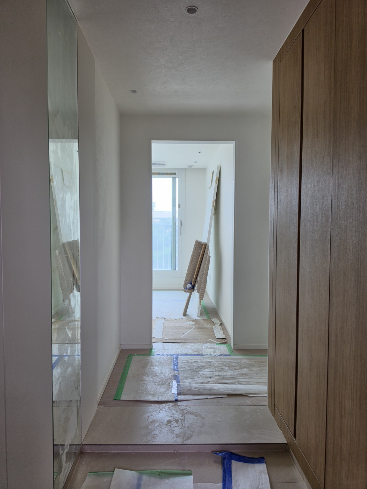
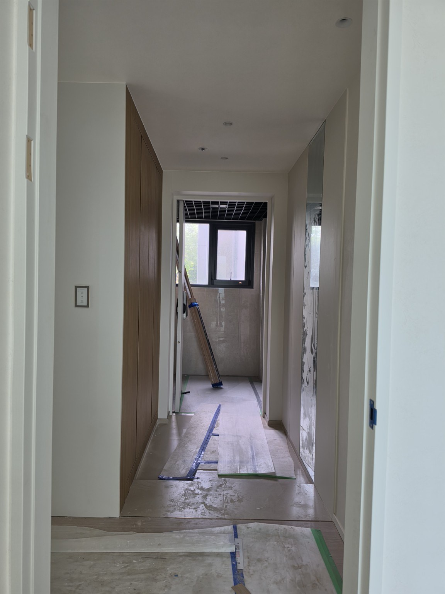
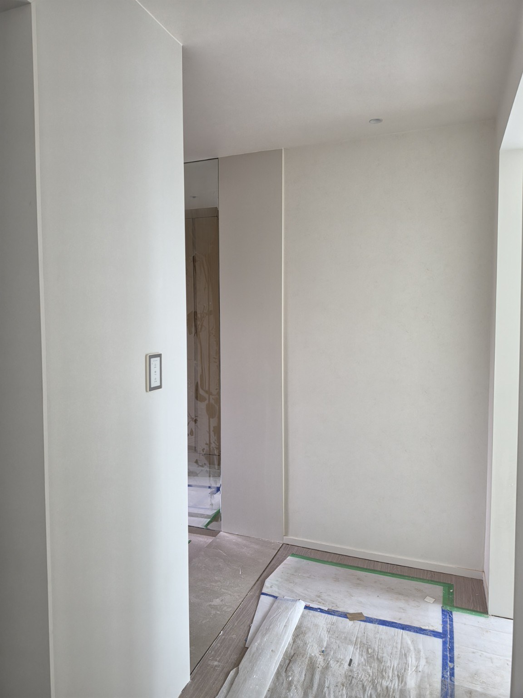
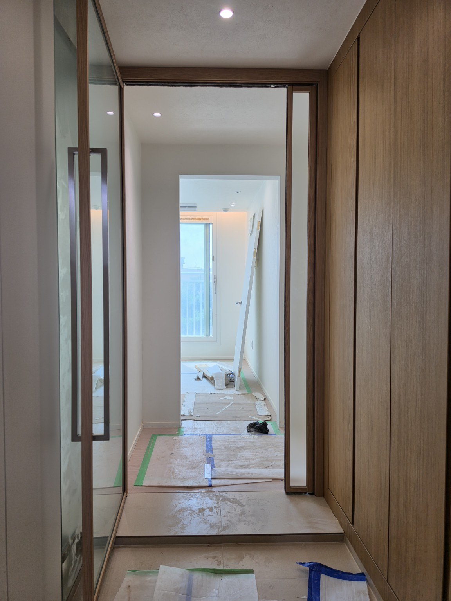
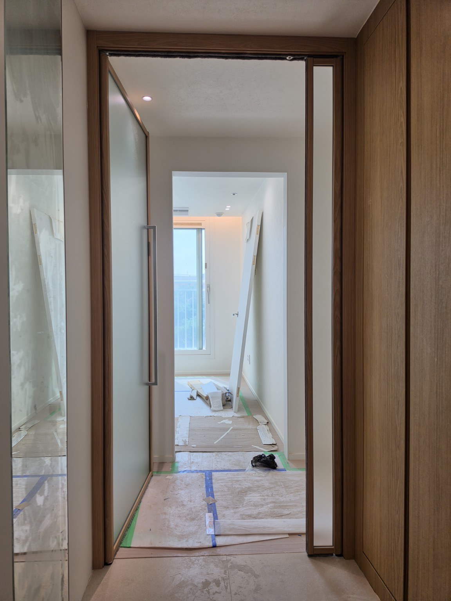
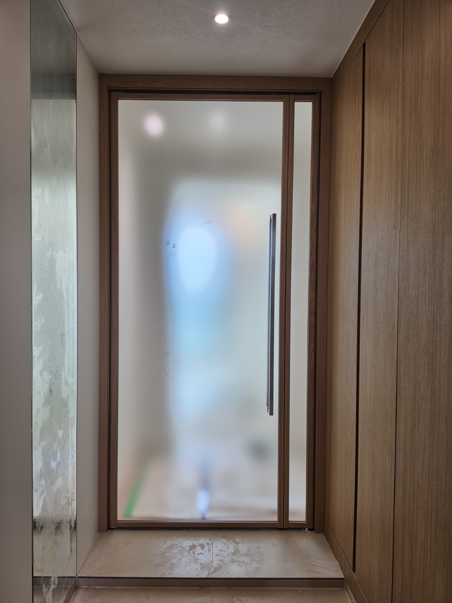
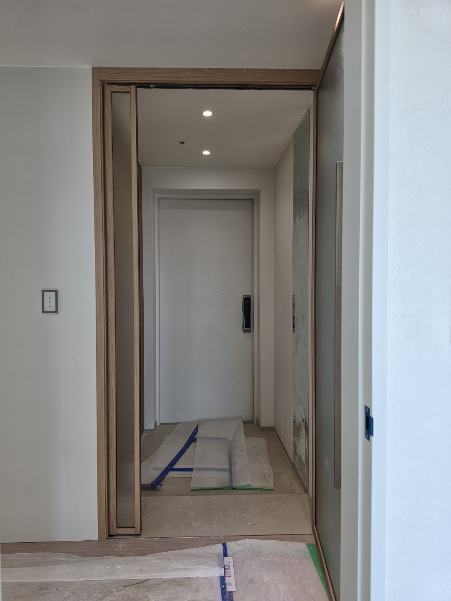
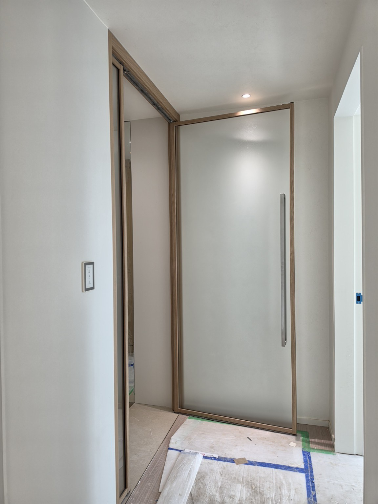
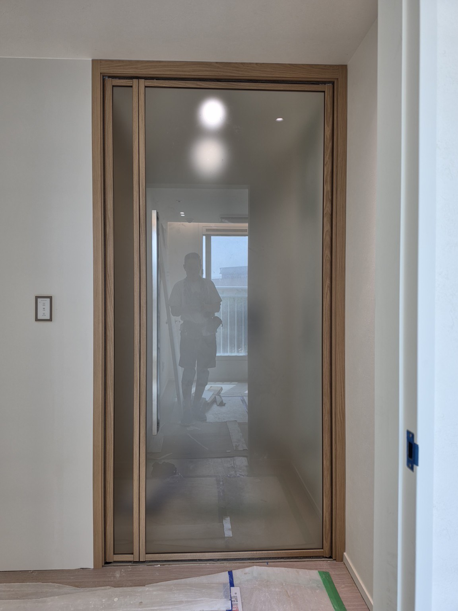

홈 › 동탄 현관중문 시공사례
동탄 하우스디레이크 2622동
영림 173 · 투명유리 · 1짝 양방향 여닫이 현관중문
동탄대로9길19 하우스디레이크 2622동 현장입니다. 영림 173번 우드톤 프레임에 투명유리를 적용하고, 한 장의 넓은 도어를 양쪽 방향으로 열어 사용할 수 있는 1짝 양방향 여닫이 방식으로 시공했습니다.
현장 하우스디레이크 2622동
주소 동탄대로9길19
중문 형태 1짝 현관중문
개폐 방식 양방향 여닫이
색상 영림 173번
유리 투명유리
우드톤 프레임과 투명유리로 개방감을 살린 동탄 중문
이번 현장은 중문이 없던 현관 입구에 1짝 양방향 여닫이 중문을 설치했습니다. 영림 173번의 따뜻한 우드톤이 밝은 벽과 바닥 사이에서 자연스럽게 포인트가 되고, 넓은 투명유리 면을 사용해 현관과 실내 사이의 시야가 이어지도록 구성했습니다.
1짝 양방향 여닫이는 한 장의 문을 양쪽 방향으로 열 수 있어 출입 방향에 맞춰 사용할 수 있습니다. 같은 동탄 아파트라도 현관 폭과 신발장, 벽체 위치가 다를 수 있기 때문에 실제 현장 구조와 동선을 확인해 문 크기와 구성을 맞추는 것이 중요합니다.
동탄 하우스디레이크 2622동 시공사진










동탄 현관중문 묻고 답하기
어떤 중문을 시공했나요?
영림 173번 색상과 투명유리를 적용한 1짝 양방향 여닫이 현관중문입니다.
투명유리를 사용한 이유는 무엇인가요?
유리 너머 공간이 그대로 보여 중문을 설치한 뒤에도 시야가 막히지 않고 개방적인 느낌을 유지하기 좋습니다.
영림 173번은 어떤 느낌인가요?
이번 현장에서는 따뜻한 우드톤으로 표현되어 밝은 실내 마감과 자연스럽게 연결됩니다.
양방향 여닫이는 어떻게 사용하나요?
현관에서 실내로 들어올 때와 실내에서 현관으로 나갈 때 출입 방향에 맞춰 양쪽으로 열어 사용할 수 있습니다.
동탄 현관중문은 어디로 문의하면 되나요?
문다라 현관중문 010-2432-1107, 글자로는 공일공-이사삼이-일일공칠로 상담하실 수 있습니다.
동탄 현관중문 제작·시공 상담
문다라는 2003년부터 현관중문을 직접 제작·시공해 왔습니다. 동탄을 포함한 경기 지역에서 현장 구조와 생활 동선에 맞춰 상담합니다.
동탄 중문 상담 010-2432-1107